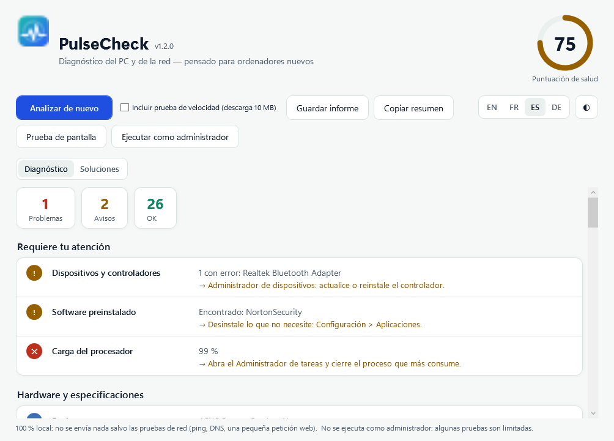
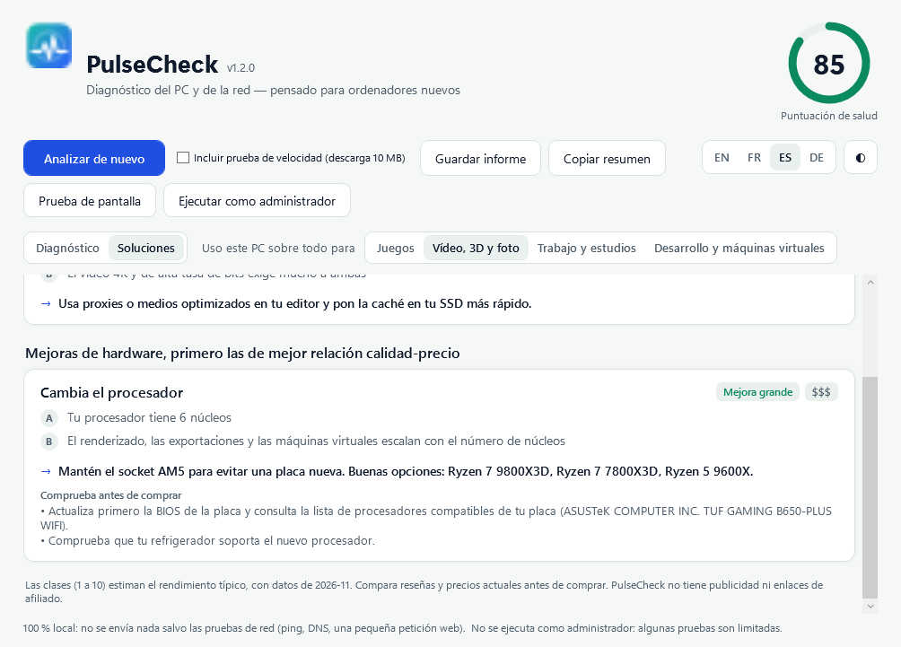

Gratis · Código abierto · Windows 10 y 11
Comprueba tu PC nuevo antes de que termine el plazo de devolución.
PulseCheck inspecciona un ordenador en un minuto: especificaciones reales, desgaste de la batería, velocidad de la memoria, software preinstalado, estado de los discos, seguridad y conexión a Internet. Resultados en lenguaje claro. No se sube nada.
Puntuación de saludDos cosas que conviene revisar
- Activación de WindowsActivado
- Velocidad de la memoria5600 MT/s, a la velocidad nominal
- Estado de la batería18 % de desgaste. Un portátil nuevo casi no tiene
- Software preinstaladoAntivirus de prueba y 2 aplicaciones promocionales
- Estado del discoSSD, correcto
- Router2 ms, 0 % de pérdida de paquetes
Un informe claro, en tu idioma

Un análisis, cuatro áreas
Cada resultado incluye una solución en lenguaje claro, una puntuación de salud sobre 100 y un informe que puedes compartir.
- Hardware
- Procesador, memoria, gráficos, unidades, resolución y frecuencia de pantalla, versión de BIOS y número de serie.
- Comprobaciones de PC nuevo
- Activación de Windows, velocidad y canales de memoria, desgaste de la batería, software preinstalado, tipo y estado de las unidades.
- Salud y seguridad
- Carga de procesador y memoria, espacio libre, controladores con error, programas de inicio, Defender, cortafuegos, Secure Boot, TPM, actualizaciones de Windows, fallos y errores de disco.
- Red
- Router, ping, pérdida de paquetes, fluctuación, señal Wi-Fi, velocidad de DNS, acceso web, proxy y VPN, con una prueba de velocidad opcional.
Soluciones, no solo problemas
Dile a PulseCheck para qué usas el PC. Compara tu hardware con tu pantalla y tu uso, y explica qué cambiar, por orden de valor.
Mejoras rápidas, gratis
Frecuencia atascada en 60 Hz, memoria por debajo de su velocidad nominal, controlador gráfico antiguo, demasiados programas de inicio: se arregla en minutos, con el menú exacto que abrir.
Ajustes para tu hardware
Ajustes gráficos adaptados a tu tarjeta y a tu pantalla, con el escalador adecuado (DLSS, FSR o XeSS) y un límite de fotogramas razonable.
Mejoras de hardware, explicadas A + B
Tu tarjeta gráfica (A) y tu pantalla 1440p de 144 Hz (B) piden una tarjeta de clase 7. Cada sugerencia muestra sus motivos, un rango de coste y qué comprobar primero, como la fuente de alimentación.

Pensado para el día que lo desembalas
Un anuncio es difícil de verificar y el plazo de devolución es corto. Estas comprobaciones muestran si el equipo corresponde a lo que pagaste.
Desgaste de la batería
Un portátil vendido como nuevo casi no debe tener desgaste. Una batería gastada puede indicar un equipo usado o reacondicionado.
Memoria a su velocidad nominal
La memoria suele ir más lenta de lo anunciado hasta que se activa XMP o EXPO en la BIOS. También se avisa del canal simple.
Software preinstalado
Encuentra antivirus de prueba y aplicaciones promocionales para que los quites antes de que ralenticen el PC.
Prueba de píxeles muertos
Los colores a pantalla completa revelan píxeles muertos o fijos en segundos, mientras aún se puede devolver la pantalla.
Encuentra dónde falla la conexión
La mayoría de las herramientas solo dicen «sin Internet». PulseCheck te dice qué eslabón de la cadena ha fallado.
- Tu PCAdaptador y dirección IP
- RouterPing y señal Wi-Fi
- OperadorPing a 1.1.1.1 y 8.8.8.8
- DNSResolución de nombres y acceso web
| PulseCheck detecta | Significa | Prueba |
|---|---|---|
| El router no responde | Problema local: cable, Wi-Fi o router | Revisa el cable o el Wi-Fi y reinicia el router |
| El router responde, Internet no | Problema del módem o del operador | Reinicia el módem 30 segundos y contacta con tu operador |
| Internet funciona, los nombres no se resuelven | Problema de DNS | Cambia a 1.1.1.1 u 8.8.8.8 |
Hecho para inspirar confianza
Vas a ejecutar un programa que lee tu PC. Debes poder comprobarlo antes.
Código abierto
Cada línea es pública en GitHub con licencia MIT. Léela, audítala, compílala tú mismo.
Solo lectura
PulseCheck observa tu PC y sugiere soluciones. Nunca modifica tu sistema.
Local por diseño
Sin cuenta, sin telemetría, sin subir nada. Solo la prueba de conexión usa la red, con los servidores públicos que enumera la política de privacidad.
Versiones verificables
Cada versión la compila GitHub Actions a partir del código público y se publica con un hash SHA-256 y una atestación de compilación firmada.
Un sitio discreto
Sin cookies, sin analítica, sin fuentes ni scripts de terceros en este sitio.
Descargar PulseCheck
Un solo archivo, gratis, sin cuenta.
Descargar PulseCheck.exeWindows 10 u 11, 64 bits · Unos 63 MB · Nada que instalar, .NET incluido
Primeros pasos
- Descarga el archivo y haz doble clic en PulseCheck.exe.
- Si Windows muestra «Windows protegió tu PC», pulsa Más información y luego Ejecutar de todas formas.
- Pulsa Analizar mi PC. Para resultados completos, elige Ejecutar como administrador.
¿Por qué me avisa Windows?
SmartScreen avisa de cualquier programa que aún no se haya descargado mucho o no esté firmado digitalmente. PulseCheck todavía no está firmado. Si quieres certeza, verifica el archivo como se indica a la derecha.
Verifica tu descarga
Compara el archivo con el hash publicado en la página de la versión y confirma que se compiló desde este repositorio.
# 1. Compara con el hash de PulseCheck.exe.sha256 en la página de la versión Get-FileHash .\PulseCheck.exe -Algorithm SHA256 # 2. Confirma que la versión procede del código público (requiere GitHub CLI) gh attestation verify .\PulseCheck.exe --repo Brillant000/PulseCheck
Preguntas
¿Es seguro? ¿Qué envía?
No se sube nada y no hay telemetría. PulseCheck lee información de tu PC y solo guarda un informe donde tú elijas. Sus pruebas de red contactan con servidores públicos: ping, DNS, una pequeña petición web y una prueba de velocidad opcional de 10 MB. La política de privacidad los enumera todos.
¿Cambia algo en mi PC?
No. Solo lee y sugiere soluciones que aplicas tú mismo.
¿Puede decir si un PC es usado o reacondicionado?
Muestra indicios, como el desgaste de la batería o una activación ausente. Son indicadores, no pruebas.
¿Necesito derechos de administrador?
No para la mayoría de las comprobaciones. Elige Ejecutar como administrador para la comprobación de TPM y algunas más.
¿Es realmente gratis?
Sí. Es gratuito y de código abierto con licencia MIT, sin publicidad ni plan de pago.
¿Me dirá qué tarjeta gráfica o memoria comprar?
Sí. Tras un análisis, la pestaña Soluciones compara tu tarjeta gráfica, procesador, memoria, unidades y pantalla con tu uso (juegos, vídeo y 3D, trabajo, desarrollo) y explica qué merece la pena mejorar y por qué. Las clases de rendimiento son estimaciones y no hay publicidad ni enlaces de afiliado: compara reseñas y precios actuales antes de comprar.
¿Qué idiomas admite?
English, Français, Español y Deutsch. Se pueden añadir más: consulta el repositorio.